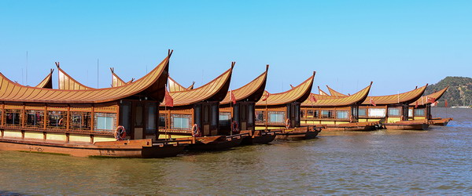
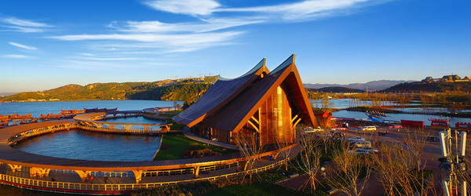
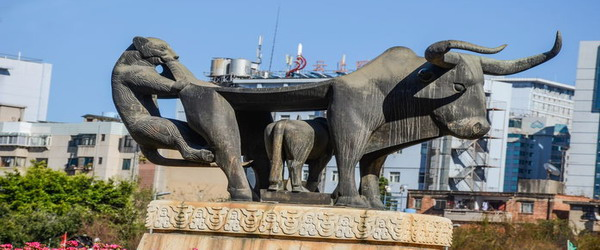
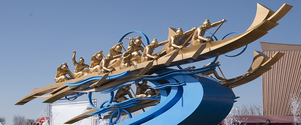

古滇文化
1. 农牧并重
古滇国时期，农业、牧业和渔业是主要生产部门。农具以青铜锄、斧、刀为主，种植稻、麦、荞、瓜、豆等作物，尚无牛耕，奴隶和平民为主要劳动力。畜牧业以牛、羊最多，兼养马、猪、狗、鸡，形成山地半山区农耕与秋末冬初上山狩猎互补的生产方式。滇池水域提供丰富鱼贝资源，已有初始的陂池、水渠、水闸和稻田养鱼系统，堪称后世“稻田养鱼”的先声。
2. 手工精湛
古滇手工业包括青铜冶铸、金银玉石加工、竹木漆器及纺织、制陶、煮盐等。青铜器种类繁多，有兵器、仪仗、乐器、酒具和装饰扣饰，工艺上鎏金、镀锡、镶嵌玛瑙，造型写实生动，反映生产生活场景，不同于中原象征王权的凝重礼器，在我国古代青铜艺术中堪称极品。纺织业有妇女纺织场面，出产“桐华布”“火洗布”闻名中外；陶器古朴，盐井遗存至今可见。
3. 商贸通达
滇池地处通往南亚、东南亚要冲，北有“五尺道”入蜀，东有“南夷道”通南粤，西有“博南道”达腾冲转西亚，东南有“交趾道”抵越南。巴蜀商人往来，与身毒、西域、大秦客商亦有接触。输入丝织品、铁器、铜镜、弩机，输出牲畜、玉石、“滇香”等。海贝为主要流通货币，兼用五铢钱、半两钱及盐砣、布缯以物易物，奴隶亦作为商品交易。
4. 军事战争
古滇前期战争不繁，与周边族群大致和睦。汉置益州郡后，讨伐“昆明”人和“哀牢”人、打通西亚商路的战争规模大且血腥。青铜器上再现短兵相接、戈矛交击、、驱赶牛羊凯旋的场景。滇王军队为汉军前锋，立下战功，这些战争题材被镌刻于青铜器上，形成鲜明的军事文化，反映古代掠夺财富与人口、、扩展生存空间的战争目的。
5. 竞技民俗
古滇人有竞渡（赛龙舟）和斗牛等竞技活动。铜鼓残片上绘有15名梳“银绽髻”、饰羽毛的女性奋力划桨的竞渡场景，似与楚文化悼念屈原相关，此俗在傣族“赛龙舟”中延续。青铜扣饰展现三层观众席围观斗牛，驯兽师放牛冲场，激烈狂野，至今苗族、彝族仍盛行斗牛。这些活动兼具祭祀神灵祖先与自娱功能，成为世代相沿的民俗节日传统。
6. 衣食住行
古滇人喜居湖滨高地，发明“干栏式”建筑，底层圈养牲畜，上层住人，防潮防兽，至今傣族聚居区仍有保留。服饰为下摆过膝对襟衫，男性脑后挽髻，女性扎“银绽”髻，贵族穿鞋，平民多跣足，节庆时妇女饰羽毛。主食稻、麦、荞，肉食牛、羊、鸡、猪、鱼贝，炊具包括青铜鼎、釜、壶、爵及陶罐、豆、碗、盆，饮食器具齐备。
7. 乐舞铜鼓
古滇人在祭祀、出征、处决犯人等重大场合表演乐舞，乐器有鼓、葫芦笙、编钟，舞者执盘、铃，戴羽冠或高冠，展示娱神与自娱风采。青铜器上有羽舞、盘舞、铃舞、四人舞乐等造型，舞姿与殷商“大夏舞”相似。铜鼓为西南特有神器，鼓面有太阳纹、蛙饰，用于召集族人、敬告祖先、发号施令，其变体“茫锣”在傣族村寨沿用至近代。
8. 图腾祭祀
古滇人盛行图腾崇拜，滇人图腾为大蛇，后衍化为龙，与农耕雨水相关；昆明先民（彝族）图腾为龙虎，有“九龙”传说及“十月太阳历”虎创世神话。祭祀活动杀牲乃至猎人头为祭品，巫师（鬼主）为勾通天地人神的媒介，魏晋时“大鬼主”仍左右南中政权。民间跳神、叫魂、放阴等巫术延续不绝，反映出对自然和生命的敬畏，原始宗教仪式深刻影响社会生活。